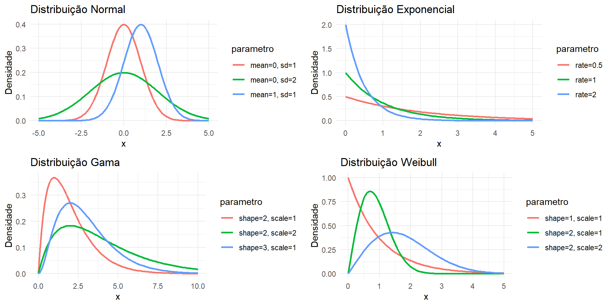
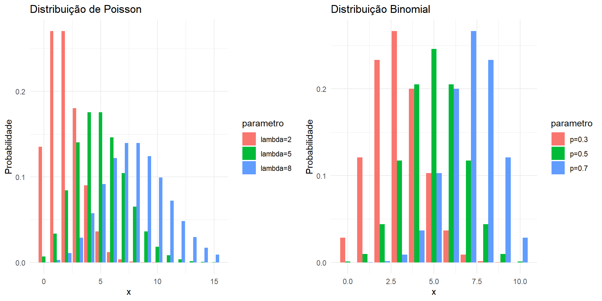

Modelos Lineares Generalizados
Universidade Estadual da Paraíba
Tópicos da aula
Introdução MLG e Conceitos Iniciais
Estrutura dos MLGs
Estimação
Testes de hipóteses
Análise de resíduo e diagnóstico
Aplicação em dados reais no R
Introdução MLG
Durante muitos anos os modelos lineares gaussianos foram utilizados na tentativa de descrever a maioria dos fenômenos aleatórios;
Quando o fenômeno sob estudo não apresentava uma resposta que fosse razoável a suposição de normalidade, algum tipo de transformação era sugerida a fim de alcançar a normalidade desejada
As transformações mais conhecidas são a logarítmica e Box & Cox (1964).
Modelo de regressão linear múltipla
O modelo de regressão linear múltipla é definido pela seguinte expressão:
\[ Y_i = \beta_0 + \beta_1X_1 + \cdots + \beta_pX_p + \epsilon_i, \] em que \(\beta_0, \beta_1, \ldots, \beta_p\) são os parâmetros desconhecidos da regressão \(X_1, \ldots, X_p\) são as covariáveis ou variáveis explicativas e \(\epsilon_i\) é um erro aleatório e \(i = 1, \ldots,n\).
Suposições do erro:
- \(\mathbb{E}(\epsilon_i) = 0\) e \(\text{Var}(\epsilon_i) = \sigma^2\), para todo \(i\) e \(0 < \sigma^2 < \infty\).
- \(\text{Cov}( \epsilon_i, \epsilon_s ) = 0, \forall i \neq s\).
- \(\epsilon_i\) tem distribuição normal.
Quando as suposições são violadas. Você pode escolher dois caminhos:
- Aplicar transformações na variável resposta
- Aplicar outra distribuição que seja mais adequada aos dados. Em especial, as distribuições pertencentes a família exponencial.
Motivação para o uso dos MLG
- Com o objetivo de superar essa limitação, Nelder e Wedderburn (1972) propuseram os modelos lineares generalizados (MLG);
- A ideia básica consiste em abrir o leque de opções para a distribuição da variável resposta;
- A distribuição são consideradas pertencentes a família exponencial;
Distribuições pertencentes a familia exponencial
As principais distribuições são:
- Poisson
- Binomial
- Exponencial
- Gama
- Normal
- entre outras …
Distribuições contínuas
Distribuições discretas
Conceitos Iniciais
Família exponencial
De maneira geral, uma distribuição é dita ser da família exponencial se sua densidade pode ser escrita da seguinte forma:
\[
f(x; \theta) = h(x)\exp\{ \eta(\theta)T(x) - b(\theta) \}
\]
em que as funções \(T(x)\) e \(h(x)\) são funções dependentes apenas da amostra e \(\eta(\theta)\) e \(b(\theta)\) são funções dependente do parâmetro genérico \(\theta\).
Modelo Linear Generalizado
Caracterização da variável resposta
Sejam \(Y_1, \ldots, Y_n\) variáveis aleatórias (v.a.) independentes, cada uma com uma função de densidade (ou de probabilidade) na forma dada a seguir:
\[ f(y_i \mid \theta_i, \phi) = \exp\{ \phi[ y_i\theta_i - b(\theta_i)] + c(y_i, \phi) \} \]
Valor esperado:
\[ \mathbb{E}(Y_i) = \mu_i = b'(\theta_i), \quad \text{em que} \quad b'(\theta_i) = \frac{d}{d\theta_i} b(\theta_i). \]
Variância:
\[ \text{Var}(Y_i) = \phi^{-1} V(\mu_i), \]
em que \(V(\mu_i) = \frac{d\mu_i}{d\theta_i}\) é a função de variância e \(\phi^{-1}\) é o parâmetro de dispersão (ou precisão).
Distribuição de \(Y\)
Uma propriedade importante envolvendo a distribuição de \(Y\) e a função de variância é a seguinte:
\[ \frac{\sqrt{\phi}(Y - \mu)}{\sqrt{V(\mu_i)}} \stackrel{d}{\rightarrow} \mathbf{N}(0, 1), \quad \text{quando} \quad \phi \rightarrow \infty \]
ou seja, para \(\phi\) “grande”, \(Y\) segue uma distribuição normal com média \(\mu\) e variância \(V(\mu_i)\phi^{-1}\).
Exemplo (Poisson)
Seja \(Y\) uma variável aleatória com distribuição Poisson com parâmetro \(\lambda\), \(Y \sim Poisson(\lambda)\). A função densidade de \(Y\) é expressa na forma:
\[ \begin{align} f(y_i; \lambda, \phi) &= \frac{e^{-\lambda}\lambda^{y_i} }{y_i!} \\ &= \exp\left\{ \log \left[ \frac{e^{-\lambda}\lambda^{y_i}}{y_i!}\right] \right\} \\ &= \exp\left\{ \log \left( e^{-\lambda}\lambda^{y_i}\right) - \log(y_i!) \right\} \\ &= \exp\left\{ \, [y_i \log \lambda - \lambda] - \log(y_i!) \, \right\} \\ &=\exp\{ \phi[ y_i\theta_i - b(\theta_i)] + c(y_i, \phi) \} \end{align} \]
em que
\(\theta_i = \log \lambda\), \(b(\theta_i) = \lambda = \exp (\theta_i)\), \(\phi = 1\) e \(c(y, \phi) = -log(y_i!)\).
Logo, temos que
\[ \mathbb{E}(Y) = b'(\theta) = \exp (\theta_i) = \lambda \]
\[ Var(Y) = \phi^{-1}b''(\theta) = \exp (\theta_i) = \lambda \]
Exemplo (Normal)
Seja \(Y\) uma variável aleatória com distribuição Normal de média \(\mu\) e variância \(\sigma^2\), \(Y \sim N(\mu, \sigma^2)\). A função densidade de \(Y\) é expressa na forma:
\[ \begin{align} f(y_i; \mu, \sigma^2, \phi) &= \frac{1}{\sqrt{2\pi\sigma^2}}\exp{\left(-\frac{(y-\mu)^2}{2\sigma^2}\right)} \\ &= \exp\left[\log\left(\frac{1}{\sqrt{2\pi\sigma^2}}\right)\right]\exp{\left(-\frac{(y-\mu)^2}{2\sigma^2}\right)} \\ &= \exp\left[-\frac{1}{2}{\log{(2\pi\sigma^2)}}\right]\exp{\left(-\frac{(y-\mu)^2}{2\sigma^2}\right)} \\ &= \exp\left[-\frac{1}{2}{\log{(2\pi\sigma^2)}} - \frac{(y-\mu)^2}{2\sigma^2} \right] \\ &= \exp\left[-\frac{1}{2}{\log{(2\pi\sigma^2)}} - \frac{(y^2-2y\mu + \mu^2)}{2\sigma^2} \right] \\ &= \exp\left\{ \frac{1}{\sigma^2} (y\mu - \frac{\mu^2}{2})-\frac{1}{2}\left[\log{(2\pi\sigma^2)} + \frac{y^2}{\sigma^2}\right] \right\} \\ \end{align} \]
em que \(-\infty < \mu, y < \infty\) e \(\sigma^2 > 0\). Logo, para \(\theta = \mu\):
\(\theta = \mu\), \(b(\theta) = \frac{\theta^2}{2}\), \(\phi = 1/\sigma^2\) e \(c(y, \phi) = -\frac{1}{2}\left[\log{(2\pi/\phi)} + y^2\phi\right]\).
Logo, temos que
\[ \mathbb{E}(Y) = b'(\theta) = \theta = \mu \] \[ Var(Y) = \phi^{-1}b''(\theta) = \phi^{-1}V(\mu_i) = \sigma^2 \]
Estrutura do modelo
Os modelos lineares generalizados são definidos por uma estrutura que envolve dois componentes:
- Componente aleatório, representado pela variável resposta \(Y\)
- Componente sistemático,
\[ g(\mu_i) = \eta_i = \beta_0 + \beta_1X_1 + \cdots + \beta_pX_p \]
em que \(\eta_i\) é chamado de preditor linear, com \(\beta_0, \beta_1, \ldots, \beta_p\) sendo os parâmetros desconhecidos da regressão e \(X_1, \ldots, X_p\) sendo as covariáveis conhecida e \(g(.)\) é uma função de ligação monótona e diferenciável.
Funções de ligações
Diversas funções de ligação podem ser usadas. A seguir vamos ver algumas delas.
- Ligação Probito: Seja \(\mu\) a proporção de sucessos de uma distribuição binomial. A ligação probito é definida por:
\[ \Phi^{-1}(\mu) = \eta, \] em que \(\Phi(.)\) é a função de distribuição acumulada da normal padrão.
- Ligação Logito: A função de ligação logito também é usada em modelos binomiais, que é expressa por:
\[ \log \left( \frac{\mu}{1-\mu} \right) = \eta \]
- Ligação Box-Cox: Uma classe importante de ligações, pelo menos para observações positivas, é a classe de ligações de Box-Cox definida por:
\[ \eta = \frac{\mu^{\lambda} - 1}{\lambda} \] para \(\lambda \neq 0\) e \(\eta = \log(\mu)\) para \(\lambda =0\).
Outras ligações são bastantes comum, tais como: logaritmo, raiz quadrada, aranda-Ordaz, complemento log-log, entre outras.
Processo de estimação dos parâmetros
Função Escore para \(\boldsymbol{\beta}\)
Para obtermos a função escore para o parâmetro \(\boldsymbol{\beta}\) calculamos inicialmente as derivadas da log verossimilhança em relação a cada \(\beta_j\),
\[ \begin{align} \frac{\partial l(\boldsymbol{\beta}, \phi)}{\partial \beta_j} &= \sum_{i=1}^{n} \phi \left\{ y_i \frac{d\theta_i}{d\mu_i} \frac{d\mu_i}{d\eta_i} \frac{d\eta_i}{d\beta_j} - \frac{d\,b(\theta_i)}{d\theta_i}\frac{d\theta_i}{d\mu_i} \frac{d\mu_i}{d\eta_i} \frac{d\eta_i}{d\beta_j} \right\} \\ &= \sum_{i=1}^{n} \phi \left\{ y_i V_i^{-1} \frac{d\mu_i}{d\eta_i} x_{ij} - \mu_iV_i^{-1} \frac{d\mu_i}{d\eta_i} x_{ij} \right\} \\ &= \sum_{i=1}^{n} \phi \left\{ (y_i - \mu_i) V_i^{-1} \frac{d\mu_i}{d\eta_i} x_{ij} \right\} \\ &= \sum_{i=1}^{n} \phi \left\{\sqrt{ \frac{w_i}{V_i}} (y_i - \mu_i) x_{ij} \right\}, \\ \end{align} \]
em que \(V_i = \frac{d\mu_i}{d\theta_i}\) e \(w_i = V_i^{-1} \left(\frac{d\mu_i}{d\eta_i}\right)^2\).
função escore na forma matricial
A função escore na forma matricial é dada por:
\[ U( \boldsymbol{\beta}) = \frac{\partial l(\boldsymbol{\beta})}{\partial \boldsymbol{\beta}} = \phi \boldsymbol{X}^{\top}\boldsymbol{W}^{1/2}\boldsymbol{V}^{-1/2}(\boldsymbol{y} - \boldsymbol{\mu}), \]
em que \(\boldsymbol{X}\) é uma matriz \(n \times p\) de posto completo cujas linhas serão denotadas por \(\boldsymbol{x}_i^{\top}\), i = \(1, \ldots, n\), \(\boldsymbol{W} =\) diag{\(w_1, \ldots, w_n\)}, \(\boldsymbol{V} =\) diag{\(V_1, \ldots, V_n\)}, \(\boldsymbol{y} = (y_1, \ldots, y_n)^{\top}\) e \(\mu = (\mu_1, \ldots, \mu_n)^{\top}\).
Função escore para \(\phi\)
A função escore para o parâmetro \(\phi\) é dada por:
\[
U(\phi) = \frac{\partial l(\phi)}{\partial \phi} = \sum_{i=1}^{n} [ y_i\theta_i - b(\theta_i)] + \sum_{i=1}^{n}c'(y_i, \phi)
\]
em que \(c'(y_i, \phi) = \frac{d \, c(y_i, \phi)}{d \, \phi}\).
Matriz de informação de Fisher
Para obtermos a matriz de informação de Fisher precisamos das segundas derivadas em relação aos parâmetros,
\[ \frac{\partial^2 l(\boldsymbol{\beta})}{\partial \beta_j \partial \beta_l}. \] A informação de Fisher para \(\boldsymbol{\beta}\) é dada por:
\[ \mathbb{E}\left[- \frac{\partial^2 l(\boldsymbol{\beta})}{\partial \beta_j \partial \beta_l} \right] = \phi\sum_{i=1}^n w_ix_{ij}x_{il}. \] Em forma matricial temos a matriz de informação de Fisher que é expressa por:
\[ K_{\boldsymbol{\beta}\boldsymbol{\beta}} = \mathbb{E}\left[- \frac{\partial^2 l(\boldsymbol{\beta})}{\partial \boldsymbol{\beta} \partial \boldsymbol{\beta}^{\top}} \right] = \phi \boldsymbol{X}^{\top} \boldsymbol{W} \boldsymbol{X}. \]
Estimação dos parâmetros
A estimação dos parâmetros pode ser feita pelo método da máxima verossimilhança
As estimativas de MV de \(\beta_j\), denotada por \(\hat{\beta}_j\), são encontradas através da solução do sistema gerado por \(U(\beta_j) = 0\), para \(j=1, \ldots, p\).
Na maioria das vezes, não teremos uma equação de forma fechada para encontrar os estimadores de MV de \(\beta_j\). Assim, é necessário utilizar algoritmos de otimização linear para obter as estimativas dos parâmetros;
Alguns métodos são: Newton-Raphson, BFGS, conjugado gradiente, etc…
Para n grande,
\[ \hat{\beta} \sim N_p( \boldsymbol{\beta}, K^{-1}_{\boldsymbol{\beta}\boldsymbol{\beta}} ) \]
Testes de hipóteses
Teste de Wald
- Um simples teste para avaliar os coeficientes da regressão é o teste de wald, pois só depende dos coeficientes estimados e desvio padrão.
- Os coeficientes de regressão \(\hat{\beta}_j\) são assintoticamente normais, quando \(n\) é grande.
- Considere um MLG com \(p\) parâmetros estimados de regressão, assumindo \(\phi\) conhecido.
Formulação do teste de Wald
O teste de Wald tem as seguintes hipóteses,
\(H_0: \beta_j = \beta_j^{(0)} = 0 \times H_1: \beta_j \neq \beta_j^{(0)} \neq 0\)
Assim, a estatística do teste de wald é dada por:
\[ \begin{align} Z = \frac{\beta_j - \beta_j^{(0)}}{\sqrt{\text{VAR}(\hat{\beta_j})}} = \frac{\beta_j}{\sqrt{\phi \boldsymbol{X^{\top}} \boldsymbol{W} \boldsymbol{X} }} \sim N(0,1), \end{align} \]
quando \(n \rightarrow \infty\).
Teste da razão entre verossimilhanças
Vamos considerar que queremos comparar dois modelos encaixados, baseados no mesmo modelo da família exponencial mas com diferentes estimativas do componente sistemático.
Modelo A: \(g(\hat{\mu}_A) = \hat{\beta}_0 + \hat{\beta}_1X_1 + \cdots + \hat{\beta}_{p_A}X_{p_A}\)
Modelo B: \(g(\hat{\mu}_B) = \hat{\beta}_0 + \hat{\beta}_1X_1 + \cdots + \hat{\beta}_{p_A}X_{p_A} + \hat{\beta}_{p_B}X_{p_B}\)
Note que o modelo A é um caso especial do modelo B, com \(p_B > p_A\). Dizemos então que o modelo A é encaixado no modelo B.
Comparação de modelos encaixados
Pelo principio da parcimônia, desejamos sempre por um modelo com menor quantidade de variáveis. Nesse caso, preferimos o modelo A ao invés do modelo B.
Para determinar se o modelo A é adequado aos dados, testamos as hipóteses:
\[ H_0: \beta_{p_A + 1} = \cdots = \beta_{p_B} = 0 \times H_1: \beta_{p_A + 1} \neq \cdots \neq \beta_{p_B} \neq 0 \]
Sob \(H_0\), denotamos o Modelo A estimado por \(\hat{\mu}_{A}\), produzindo a log-verossimilhança \(\ell_A = \ell_A(\hat{\mu}_1, \ldots, \hat{\mu}_n, \phi; y )\)
Para o modelo B estimado, \(\hat{\mu}_{B}\), a log-verossimilhança estimada é dada por \(\ell_B =\ell_B(\hat{\mu}_1, \ldots, \hat{\mu}_n, \phi; y )\).
A estatistica do teste da razão entre verossimilhanças é dada por:
\[ L = 2[ \ell_B - \ell_A ] \sim \chi^2_{(p_B - p_A)} \] quando \(n \rightarrow \infty\).
Seleção de variáveis
Os três principais métodos de seleção de variáveis são: Backward, Forward e Stepwise.
Backward
- Começamos com todas as variáveis explicativas incluídas no modelo.
- A cada iteração, removemos a variável que contribui menos com a variável dependente.
- O processo continua até que não haja mais variáveis que atendam aos critérios de remoção (geralmente baseados em valores de significância ou estatísticas como o valor-p).
Forward
- Começamos com um modelo vazio (sem variáveis explicativas).
- Em cada etapa, adicionamos a variável explicativa e verificamos se ela contribui ou não para o modelo
- O processo é interrompido quando não há mais variáveis que atendam ao critério de entrada (geralmente baseado em valores de significância).
Stepwise
- Combina os métodos backward e forward.
- Começamos com um modelo vazio e, em cada etapa, avaliamos a inclusão e a exclusão de variáveis.
- A variável que contribui menos para o modelo (com base na probabilidade F) é inserida ou removida.
Critério de seleção de modelos
- O método Akaike Information Criterion (AIC) e Bayesian Information Criterion (BIC) são critérios de seleção de modelo;
- Ideia básica é selecionarmos um modelo que seja parcimonioso, ou em outras palavras, que esteja bem ajustado e tenha um número reduzido de parâmetros;
AIC
O criério AIC é dado por:
\[
AIC = -2\ell(\hat{\beta}_1, \ldots, \hat{\beta}_p, \phi; y ) + 2p
\]
Observação: Quanto menor for o valor do AIC melhor será o modelo.
BIC
O critério BIC é dado por:
\[
BIC = -2\ell(\hat{\beta}_1, \ldots, \hat{\beta}_p, \phi; y ) + log(n) p
\]
Observação: Quanto menor for o valor do BIC, melhor será o modelo.
O critério BIC é preferível, pois penaliza mais fortemente a quantidade de variável no modelo.
Pseudo-\(R^2\)
Os modelos lineares generalizados (GLMs) não possuem um \(R^2\) tradicional como os modelos lineares (LMs) baseados na abordagem dos quadrados mínimos ordinários (OLS).
No entanto, eles apresentam o que é chamado de pseudo-\(R^2\) (ou pseudo R-squared). Assim como os \(R^2\) verdadeiros, os pseudo-\(R^2\) variam de 0 a 1, indicando o quão bem o modelo está ajustado e explicativo. Quanto maior o valor do pseudo-\(R^2\), melhor o ajuste do modelo.
Análise de resíduos e técnicas de diagnóstico
Análise dos resíduos
- Uma etapa importante na análise de um ajuste de regressão é a verificação de possíveis afastamento das suposições feitas para o modelo;
- Essa verificação é feita através de uma análise de resíduo;
Objetivos da análise de resíduo
- Identificar a existência de observações discrepantes (outliers);
- Avaliar a adequação da distribuição de probabilidade proposta para a variável resposta;
- Detecção de observações influentes, isto é, pontos que exercem um peso desproporcional nas estimativas dos parâmetros do modelo;
Resíduos para MLGs
A distância \(y_i - \hat{\mu}_i\), chamada de resíduos resposta, são os resíduos mais simples dos modelos lineares gaussianos.
Contudo, esses resíduos não são adequados para os MLGs. Pois, não necessariamente tem variância constante ou tem distribuição normal.
Assim, como nos modelos de regressão linear gaussiano, os resíduos para os MLGs devem ser aproximadamente normal com média zero e variância constante.
Resíduo de Pearson
A forma mais direta pra lidar com variâncias não constantes em MLG é o resíduo de Pearson, dado por:
\[ r_P = \frac{y - \hat{\mu}}{\sqrt{\hat{Var}(Y_i | \eta_i)}} \]
em que \(\hat{Var}(Y_i | \eta_i)\) é a variância condicional da variável resposta.
Resíduo quantílico
Uma alternativa para os resíduos de Pearson e deviance são os resíduos quantílicos, que tem como vantagem serem normalmente distribuídos de forma exata.
Seja \(F(y; \mu, \phi)\) a função de distribuição acumulada de uma variável aleatória \(Y\). Os resíduos quantílicos é dado por:
\[ r_Q = \Phi^{-1}(F(y; \hat \mu, \phi)) \]
em que \(\Phi()\) é a função de distribuição acumulada de uma normal padrão.
Distância de Cook
Observações influentes são outliers com alta influência na estimação dos parâmetros;
Uma das medidas estatísticas que podemos usar pra identificar uma observação influente é a distância de Cook
A distância de Cook aproximada para MLGs é dada por:
\[ D \approx \left( \frac{r_p}{1 - h} \right)^2 \frac{h}{\phi \, p} \] em que \(r_p\) é o resíduo de Pearson, \(p\) é a quantidade de variáveis do modelo e \(h\) são os elementos da matriz H.
- As observações que apresentarem \(D > \frac{4}{n}\) dizemos que é uma observação influente
Exemplo MLG Gama no R
Descrição dos dados
| Variável | Descrição |
|---|---|
| crime | taxa de criminalidade per capita por cidade |
| zn | proporção de terrenos residenciais zoneados para lotes com mais de 25.000 pés quadrados |
| indus | proporção de hectares comerciais não varejistas por cidade |
| chas | Variável dummy Charles River (= 1 se o imovel limita o rio; 0 caso contrário) |
| nox | concentração de óxidos de nitrogênio (partes por 10 milhões) |
| rm | número médio de quartos por habitação |
| age | proporção de unidades ocupadas pelos proprietários construídas antes de 1940 |
| dis | média ponderada das distâncias a cinco centros de emprego de Boston |
| rad | índice de acessibilidade às rodovias radiais |
| tax | taxa de imposto sobre a propriedade de valor total por US$ 10.000 |
| ptratio | proporção aluno-professor por cidade |
| black | proporção de negros por cidade |
| lstat | percentual da população de baixa renda |
| medv | valor médio das casas ocupadas pelos proprietários em US$ 1.000 |
Vamos ao R !!!
Regressão Logistica
Motivação
- Em várias situações temos que lidar com dados do tipo “Sucesso” ou “Fracasso”, ou seja, dados dicotômicos.
- A distribuição binomial pode ser usada para estudar comportamento de dados dicotômicos
- A regressão logística é um modelo GLM, assumindo a distribuição marginal de Y sendo uma binomial e com uso da função de ligação logito;
- Uso desse tipo de metodologia em problemas de classificação.
Modelo de regressão logístico simples
Vamos considerar o modelo logistico simples em que \(\pi(x)\) é a probabilidade de sucesso dado o valor \(x\) de uma variável explicativa qualquer. A estrutura do modelo é dada por:
\[ \log \left( \frac{\pi(x)}{1 - \pi(x)} \right) = \beta_0 + \beta_1 X \]
em que \(\beta_0\) e \(\beta_1\) são parâmetros desconhecidos.
Exemplo de aplicação
- O modelo logístico poderia, por exemplo, ser aplicado para analisar a associação entre uma determinada doença e a ocorrência ou não de um fator particular.
Seriam então amostrados, independentemente,
\(n_1\) indivíduos com presença do fator (x=1)
\(n_2\) indivíduos com ausência do fator (x=0)
Chances de desenvolvimento de uma doença
- Seja \(\pi(x)\) a probabilidade de desenvolvimento da doença. Dessa forma, a chance de desenvolvimento da doença para um indivíduo com presença do fator é dada por:
\[ \log \left( \frac{\pi(1)}{1 - \pi(1)} \right) = \beta_0 + \beta_1 \quad \Leftrightarrow \quad \frac{\pi(1)}{1 - \pi(1)} = \exp (\beta_0 + \beta_1). \]
- Agora, a chance de desenvolvimento da doença para um indivíduo sem presença do fator é dada por:
\[ \log \left( \frac{\pi(0)}{1 - \pi(0)} \right) = \beta_0 \quad \Leftrightarrow \quad \frac{\pi(0)}{1 - \pi(0)} = \exp (\beta_0) \]
Razão de chances
Logo, a razão de chances fica dada por:
\[ \frac{\pi(1)}{\pi(0)}\frac{1 - \pi(0)}{1 - \pi(1)} = \exp (\beta_1) \]
dependendo apenas do parâmetro \(\beta_1\).
Referencial teórico
DUNN, Peter K. SMYTH, Gordon K. Generalized Linear Models With Examples in R. Springer (2018)
PAULA, G. A. Modelos de regressão: com apoio computacional. São Paulo: IMEUSP (2004).
DOBSON, A.J. An introduction to generalized linear models. London: Chapman & Hall (1990)
Obrigado!